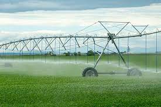
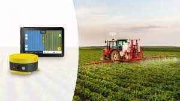

Sensor-based irrigation is a cutting-edge agricultural practice that uses moisture sensors to precisely measure soil moisture levels in real time. By providing accurate data on the water needs of crops, these systems enable farmers to optimize water usage, reducing waste and promoting sustainable farming. With sensor-based irrigation, farmers can tailor watering schedules to the specific requirements of each field or crop, ensuring that plants receive the right amount of water for healthy growth. This targeted approach not only conserves water but also helps prevent over- or under-watering, which can negatively impact crop health and yields. By improving water efficiency, sensor-based irrigation plays a key role in promoting sustainable agriculture and enhancing the resilience of farming systems.
GPS-guided tractors represent a significant advancement in modern farming practices, offering farmers unparalleled precision and efficiency in field operations. By utilizing satellite technology, these tractors navigate fields with pinpoint accuracy, ensuring that tasks such as planting, fertilizing, and harvesting are carried out with minimal overlap and waste. This level of precision not only saves time and resources but also helps to maximize crop yields. GPS-guided tractors enable farmers to create optimized routes for various tasks, reducing fuel consumption and soil compaction while improving overall productivity. Additionally, the data collected from these tractors can be integrated with other farm management systems, providing valuable insights and contributing to more sustainable and profitable agricultural practices.
Drone imagery has revolutionized the agricultural industry by providing farmers with high-resolution aerial views of their fields. Drones equipped with cameras capture detailed images and videos, offering a bird's-eye view of the entire farm. This technology allows farmers to monitor crop health, assess soil conditions, and identify areas of concern, such as pest infestations or water stress, quickly and efficiently. By analyzing drone imagery, farmers can make informed decisions about irrigation, fertilization, and other management practices to optimize yields and minimize resource waste. Additionally, drones enable farmers to track growth patterns and plan for harvesting with greater precision, ultimately leading to more sustainable and profitable farming practices.